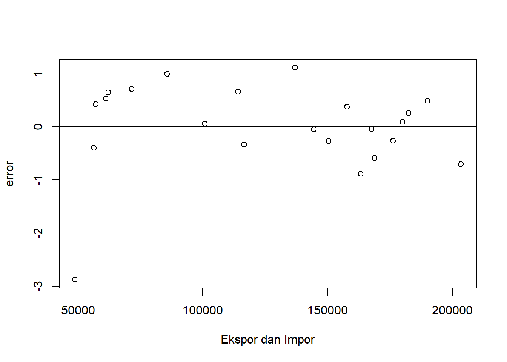
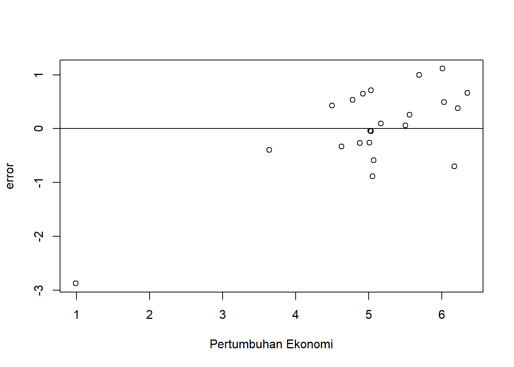

library(tidyverse)
library(readxl)PENGARUH EKSPOR DAN IMPOR TERHADAP PERTUMBUHAN EKONOMI DI INDONESIA
Metode Penelitian Politeknik APP Jakarta

1 Pendahuluan
1.1 Latar belakang
Pertumbuhan ekonomi adalah indikator utama kesejahteraan suatu negara, dan kemampuan ekspor dan impor untuk berkontribusi pada pertumbuhan ekonomi menjadi fokus perhatian. Ekspor dapat memperluas pasar bagi produk-produk nasional, meningkatkan pendapatan, dan menciptakan lapangan kerja. Di sisi lain, impor membawa inovasi, teknologi, dan barang konsumsi yang mungkin sulit diproduksi secara efisien di dalam negeri.
Dalam konteks Indonesia, sebagai negara dengan ekonomi yang terus berkembang, pemahaman mendalam tentang hubungan antara ekspor, impor, dan pertumbuhan ekonomi sangat penting. Periode 1999-2020 yang menjadi cakupan penelitian mencakup periode signifikan dalam sejarah ekonomi Indonesia, termasuk periode krisis keuangan Asia pada tahun 1997 dan proses globalisasi ekonomi yang semakin memperkuat keterkaitan antarnegara. Dengan menggunakan metode penelitian olah data menggunakan RStudio, penelitian ini bertujuan untuk mengidentifikasi pola hubungan, signifikansi, dan dampak dari ekspor dan impor terhadap pertumbuhan ekonomi Indonesia
1.2 Ruang lingkup
Penelitian ini bertujuan untuk mendalami hubungan antara ekspor, impor, dan pertumbuhan ekonomi Indonesia dalam rentang waktu 1999-2020. Fokus utama penelitian adalah memahami bagaimana ekspor dapat memperluas pasar produk nasional, meningkatkan pendapatan, dan menciptakan lapangan kerja, sementara impor membawa inovasi, teknologi, dan barang konsumsi yang sulit diproduksi secara efisien di dalam negeri. Rentang waktu penelitian mencakup periode krisis keuangan Asia pada tahun 1997 dan proses globalisasi ekonomi yang semakin memperkuat keterkaitan antarnegara. Metode penelitian yang digunakan adalah olah data menggunakan RStudio, yang diharapkan dapat mengidentifikasi pola hubungan, signifikansi, dan dampak dari ekspor dan impor terhadap pertumbuhan ekonomi Indonesia. Dengan demikian, penelitian ini berpotensi memberikan wawasan mendalam tentang faktor-faktor yang mempengaruhi dinamika ekonomi Indonesia, memungkinkan pengambilan keputusan yang lebih baik di bidang kebijakan ekonomi dan perdagangan.
1.3 Rumusan masalah
Berdasarkan uraian latar belakang diatas maka yang menjadi masalah pokok pada penelitian ini adalah:
Bagaimana hubungan antara volume ekspor Indonesia dan pertumbuhan ekonomi selama periode 1999-2020, dan apakah terdapat pola atau tren tertentu yang dapat diidentifikasi dari data tersebut?
Sejauh mana impor memiliki dampak terhadap pertumbuhan ekonomi Indonesia selama rentang waktu yang sama, dan apakah ada perubahan signifikan dalam korelasi antara impor dan pertumbuhan ekonomi setelah periode krisis keuangan Asia pada tahun 1997?
1.4 Tujuan dan manfaat penelitian
Tujuan penelitian ini adalah untuk mengidentifikasi hubungan antara ekspor dan impor Indonesia dengan pertumbuhan ekonomi selama periode 1999-2020. Penelitian bertujuan mengeksplorasi dampak ekspor terhadap pendapatan dan lapangan kerja, serta menganalisis peran impor dalam konteks pertumbuhan ekonomi negara.
Adapun manfaat dari penelitian ini antara lain:
- Manfaat Teoritis
Manfaat teoritis dari penelitian ini mencakup kontribusi terhadap literatur ekonomi dengan menyediakan wawasan mendalam tentang hubungan kompleks antara ekspor, impor, dan pertumbuhan ekonomi. Penelitian ini dapat memperkaya teori ekonomi internasional dan menyumbang pada pemahaman tentang dinamika ekonomi negara berkembang, seperti Indonesia.
- Manfaat Praktis
- Bagi Penulis
Hasil penelitian ini memberikan manfaat praktis bagi penulis dengan meningkatkan keahlian analisis data menggunakan RStudio dan memperdalam pemahaman tentang ekonomi internasional. Penulis dapat mengaplikasikan keterampilan ini dalam penelitian lanjutan dan memberikan kontribusi pada pengembangan kebijakan ekonomi.
- Bagi Instansi
Hasil penelitian ini memberikan manfaat praktis bagi instansi terkait, seperti Kementerian Perdagangan atau Lembaga Statistik. Temuan ini dapat menjadi dasar untuk merumuskan kebijakan perdagangan dan ekonomi yang lebih efektif, memungkinkan instansi untuk mengarahkan sumber daya dengan lebih tepat dan mendukung pertumbuhan ekonomi yang berkelanjutan.
1.5 Package
Untuk keperluan menunjang regresi multivariat yang dilakukan di Rstudio untuk penelitian ini antara lain sebagai berikut:
2 Studi pustaka
- Ekspor
Ekspor, menurut Lipsey (1995), merujuk pada seluruh penjualan barang yang dihasilkan oleh suatu negara dan diperdagangkan kepada negara lain dengan maksud memperoleh devisa. Dalam konteks ekonomi, ekspor melibatkan penjualan barang atau layanan dari produsen domestik ke konsumen atau bisnis di luar wilayah negara pengirim. Proses ekspor melibatkan aktivitas seperti produksi, distribusi, dan pemasaran produk di pasar internasional. Jenis produk yang diekspor dapat bervariasi dari barang manufaktur hingga komoditas alam, serta jasa seperti pariwisata atau layanan konsultasi. Ekspor memiliki peran vital dalam menggerakkan perekonomian suatu negara, karena dapat meningkatkan pendapatan, menciptakan lapangan kerja, dan meningkatkan daya saing industri domestik di pasar global. Negara-negara cenderung mengembangkan strategi ekspor sebagai bagian dari kebijakan ekonomi mereka untuk mengoptimalkan sumber daya dan meningkatkan pertumbuhan ekonomi. Faktor-faktor seperti stabilitas mata uang, kebijakan perdagangan, dan kondisi pasar internasional memainkan peran kunci dalam menentukan keberhasilan ekspor suatu negara. Dengan demikian, ekspor menjadi aspek integral dalam dinamika ekonomi global dan berkontribusi secara signifikan terhadap pembangunan ekonomi suatu negara. Menurut Salvatore (1997), ada beberapa motivasi di balik pelaksanaan ekspor oleh suatu negara, termasuk: a. Kebutuhan untuk memenuhi ragam kebutuhan yang tidak dapat dipenuhi sepenuhnya oleh produksi atau hasil dalam negeri, termasuk kebutuhan yang, meskipun bisa diproduksi secara lokal, lebih ekonomis jika diproduksi di luar negeri. b. Niat negara untuk meluaskan pasar untuk komoditas domestiknya sebagai upaya untuk meningkatkan sumber daya devisa yang dapat digunakan dalam kegiatan pembangunan ekonomi.
- Impor
Impor adalah kegiatan memasukkan barang atau jasa dari luar negeri ke dalam suatu negara. Ini merupakan elemen penting dalam perdagangan internasional yang melibatkan pembelian dan penggunaan produk atau layanan yang tidak diproduksi secara lokal. Proses impor memungkinkan suatu negara untuk memperoleh barang atau jasa yang tidak tersedia atau kurang efisien diproduksi di dalam negeri, melalui pembelian dari pasar global. Importasi mencakup sejumlah tahapan, termasuk proses perizinan, pembayaran bea masuk, dan pemenuhan persyaratan peraturan perdagangan internasional. Melalui impor, suatu negara dapat mendapatkan akses ke berbagai jenis barang, termasuk bahan baku, teknologi, dan produk konsumen yang mendukung keberlanjutan dan pertumbuhan ekonomi. Selain itu, impor juga dapat membawa dampak positif dalam meningkatkan variasi barang dan layanan yang tersedia di pasar domestik, mendorong inovasi, serta memberikan kontribusi terhadap diversifikasi ekonomi. Meskipun impor memberikan manfaat signifikan, pengaturan yang cermat diperlukan untuk menjaga keseimbangan perdagangan dan melindungi industri lokal agar tetap kompetitif. Oleh karena itu, impor tidak hanya sebagai alat untuk memenuhi kebutuhan, tetapi juga sebagai strategi yang cerdas untuk mengoptimalkan sumber daya dan meningkatkan kesejahteraan ekonomi suatu negara.
3 Metode penelitian
3.1 Data
library(readxl)
library(tidyverse)
library(kableExtra)
dat<- read_excel("The Data.xlsx")
kbl(dat) %>%
kable_styling(bootstrap_options = c("striped", "hover", "condensed", "responsive"))| x | s | y |
|---|---|---|
| 48665.5 | 24003.3 | 0.99 |
| 62124.0 | 33514.8 | 4.92 |
| 56323.1 | 30962.1 | 3.64 |
| 57105.8 | 31288.9 | 4.50 |
| 61034.5 | 32550.7 | 4.78 |
| 71584.6 | 46524.5 | 5.03 |
| 85659.9 | 57700.9 | 5.69 |
| 100798.6 | 61065.5 | 5.50 |
| 114101.0 | 74473.4 | 6.35 |
| 137020.4 | 129197.3 | 6.01 |
| 116510.0 | 96829.2 | 4.63 |
| 157779.0 | 135663.3 | 6.22 |
| 203496.6 | 177435.7 | 6.17 |
| 190031.8 | 191691.0 | 6.03 |
| 182551.9 | 186628.7 | 5.56 |
| 176292.7 | 178178.8 | 5.01 |
| 150393.3 | 142694.5 | 4.88 |
| 144489.7 | 135652.8 | 5.03 |
| 168828.2 | 156985.5 | 5.07 |
| 180012.7 | 188711.2 | 5.17 |
| 167683.0 | 170727.4 | 5.02 |
| 163306.5 | 141568.8 | 5.05 |
Penelitian ini menggunakan data sekunder dengan bentuk data time series 1999-2020, data yang dipakai ialah data yang telah diolah dengan sumber Badan Pusat Statistik.
library(readxl)
dat<-read_excel('The Data.xlsx')
library(readxl)
reg1<-lm(y~x+s, data=dat)
dat$m<-resid(reg1)
plot(dat$x,dat$m,xlab="Ekspor dan Impor",ylab="error")
abline(h=0) #membuat garis horizontal di y=0
Plot pengaruh error terhadap Ekspor dan Impor
library(readxl)
dat$m<-resid(reg1)
plot(dat$y,dat$m,xlab="Pertumbuhan Ekonomi",ylab="error")
abline(h=0)
Plot pengaruh error terhadap Pertumbuhan Ekonomi
3.2 Metode analisis
Metode analisis dalam penelitian ini dimulai dengan pengumpulan data ekonomi terkait ekspor, impor, dan pertumbuhan ekonomi di Indonesia dari tahun 1999 hingga 2020. Data yang terkumpul kemudian disiapkan dengan melakukan pembersihan data untuk menangani nilai yang hilang, melakukan pemformatan variabel, dan konversi jenis data jika diperlukan. Penggunaan fungsi read_excel dari paket readxl dalam R memungkinkan pembacaan data dari file Excel dan mengubahnya menjadi format data frame. Setelah tahap persiapan data, dilanjutkan dengan analisis data eksploratif (EDA) yang melibatkan visualisasi hubungan antar variabel. Dalam konteks ini, sebuah diagram pencar (plot(x, y)) dibuat untuk memberikan gambaran visual tentang korelasi antara variabel ekspor, impor, dan pertumbuhan ekonomi. Langkah selanjutnya melibatkan uji korelasi Pearson untuk mengukur kekuatan dan arah hubungan antara variabel-variabel tersebut. Hasilnya, dengan koefisien korelasi sebesar 0.503, menunjukkan adanya hubungan positif antara ekspor, impor, dan pertumbuhan ekonomi. Untuk pemahaman lebih mendalam, dilakukan analisis regresi linear dengan menggunakan model regresi lm(y ~ x). Hasil regresi menunjukkan bahwa variabel ekspor dan impor memiliki dampak positif terhadap pertumbuhan ekonomi, dengan koefisien regresi masing-masing sebesar 5.156e-06 dan 3.824e+00. Dengan demikian, metode analisis ini mencakup langkah-langkah dari pengumpulan dan persiapan data hingga analisis eksploratif dan regresi linear, memberikan pemahaman komprehensif tentang hubungan ekspor, impor, dan pertumbuhan ekonomi di Indonesia.
4 Pembahasan
4.1 Pembahasan masalah
Pada bagian ini dapat ditampilkan data dan visualisasi data yang telah dikumpulkan.
| Variable | Coefficient | Std.Error | t-value | Prob (.) |
|---|---|---|---|---|
| Intecerpt | 1.983e+00 | 8.927e-01 | 2.221 | 0.0387 |
| X | 5.770e-05 | 2.170e-05 | 2.659 | 0.0155 |
| S | -3.865e-05 | 1.803e-05 |
4.2 Analisis masalah
Hasil regresinya adalah
dat<-read_excel('The Data.xlsx')
library(readxl)
reg1<-lm(y~x+s, data=dat)
summary(reg1)
Call:
lm(formula = y ~ x + s, data = dat)
Residuals:
Min 1Q Median 3Q Max
-2.87313 -0.31610 0.07771 0.52296 1.11460
Coefficients:
Estimate Std. Error t value Pr(>|t|)
(Intercept) 1.983e+00 8.927e-01 2.221 0.0387 *
x 5.770e-05 2.170e-05 2.659 0.0155 *
s -3.865e-05 1.803e-05 -2.144 0.0452 *
---
Signif. codes: 0 '***' 0.001 '**' 0.01 '*' 0.05 '.' 0.1 ' ' 1
Residual standard error: 0.8828 on 19 degrees of freedom
Multiple R-squared: 0.4338, Adjusted R-squared: 0.3742
F-statistic: 7.279 on 2 and 19 DF, p-value: 0.004499Model regresi linear ini memberikan gambaran tentang hubungan antara pertumbuhan ekonomi Indonesia ((y)) dengan variabel ekspor ((x)) dan impor ((s)). Nilai intercept sebesar 1.983 mengindikasikan estimasi pertumbuhan ekonomi ketika nilai ekspor dan impor mencapai nol, meskipun interpretasi praktisnya mungkin terbatas. Koefisien positif untuk variabel ekspor (5.770e-05) menggambarkan bahwa peningkatan ekspor berkontribusi positif terhadap pertumbuhan ekonomi. Sementara itu, koefisien negatif untuk variabel impor (-3.865e-05) menunjukkan adanya hubungan negatif antara impor dan pertumbuhan ekonomi, yang berarti semakin tinggi nilai impor, pertumbuhan ekonomi kemungkinan akan lebih rendah. Residual standard error dengan nilai 0.8828 mengukur seberapa akurat model dapat memprediksi pertumbuhan ekonomi berdasarkan variabel ekspor dan impor. R-squared sebesar 0.4338 menunjukkan bahwa sekitar 43.38% variabilitas pertumbuhan ekonomi dapat dijelaskan oleh model ini. Hasil F-statistic sebesar 7.279 dengan p-value 0.004499 memberikan indikasi signifikansi keseluruhan model. Dengan demikian, model ini menyiratkan bahwa ekspor dan impor memiliki dampak yang signifikan terhadap pertumbuhan ekonomi Indonesia, namun penting untuk memahami bahwa interpretasi sebab-akibatnya perlu diterjemahkan dengan hati-hati dan mempertimbangkan konteks ekonomi yang lebih luas.
5 Kesimpulan
Hasil analisis statistik menunjukkan adanya hubungan positif antara jumlah ekspor dengan pertumbuhan ekonomi di Indonesia. Koefisien positif untuk variabel ekspor (5.770e-05) menegaskan bahwa peningkatan ekspor berkontribusi positif terhadap pertumbuhan ekonomi, meskipun terdapat hubungan negatid antara Impor dengan pertumbuhan ekonomi indonesia
Koefisien regresi positif pada variabel ekspor memberikan indikasi bahwa peningkatan aktivitas perdagangan internasional dapat mendorong pertumbuhan ekonomi Indonesia. Temuan ini dapat menjadi landasan penting dalam merancang kebijakan ekonomi dan perdagangan untuk memperkuat peran ekspor dan impor dalam mendukung pertumbuhan ekonomi negara.
6 Referensi
Adrian Sutedi, S. H. (2014). Hukum Ekspor Impor. RAS.
Berata, I. K. O. (2014). Panduan Praktis Ekspor Impor. RAS.
Pridayanti, A. (2014). Pengaruh ekspor, impor, dan nilai tukar terhadap pertumbuhan ekonomi di Indonesia periode 2002-2012. Jurnal Pendidikan Ekonomi (JUPE), 2(2).
Sasono, H. B. (2021). Manajemen Pelabuhan dan Realisasi Ekspor Impor. Penerbit Andi.